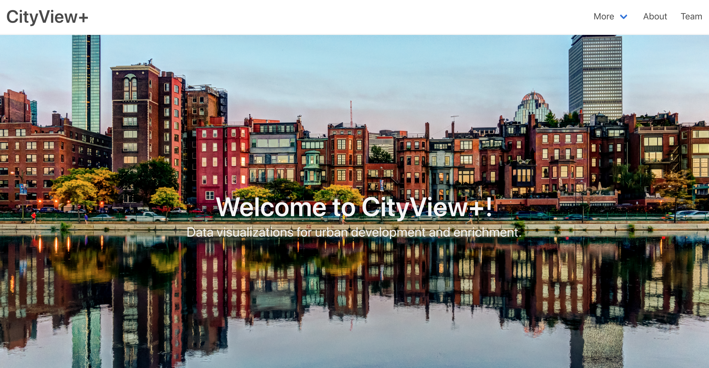

Projects


Data Driven Human Behavior Analysis (Won SDM'19 Best Applied Data Science Paper Award!)
Project page, with open source code and released dataset.
Team: Menghai Pan, Yanhua Li, Xun Zhou, Zhenming Liu, Rui Song, Hui Lu, Jun Luo.
Funded by NSF CRII CPS award CNS-1657350, and NSF S&CC grant CMMI-1831140.

CityLines: Hybrid Hub-and-Spoke Transit System
Dynamic and hybrid hub-and-spoke urban transit system.
Funded by NSF CRII CPS award CNS-1657350.

CityView+: Urban Data Visualization
WPI Undergraduate Major Qualifier Project (MQP), 2018–2019.

Urban Bike Path Planning by Mining Knowledge from Dockless Bike Sharing System
A joint project with Microsoft Research.

Scalable Power User Assignment
Data-driven approach for optimized large scale user assignment.